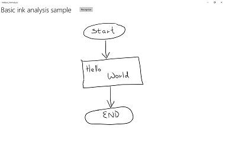
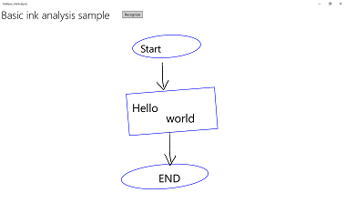

Recognize Windows Ink strokes as text and shapes
Convert ink strokes to text and shapes using the recognition capabilities built into Windows Ink.
Important APIs: InkCanvas, Windows.UI.Input.Inking
Free-form recognition with ink analysis
Here, we demonstrate how to use the Windows Ink analysis engine (Windows.UI.Input.Inking.Analysis) to classify, analyze, and recognize a set of free-form strokes on an InkCanvas as either text or shapes. (In addition to text and shape recognition, ink analysis can also be used to recognize document structure, bullet lists, and generic drawings.)
Note
For basic, single-line, plain text scenarios such as form input, see Constrained handwriting recognition later in this topic.
In this example, recognition is initiated when the user clicks a button to indicate they are finished drawing.
Download this sample from Ink analysis sample (basic)
First, we set up the UI (MainPage.xaml).
The UI includes a "Recognize" button, an InkCanvas, and a standard Canvas. When the "Recognize" button is pressed, all ink strokes on the ink canvas are analyzed and (if recognized) corresponding shapes and text are drawn on the standard canvas. The original ink strokes are then deleted from the ink canvas.
<Grid Background="{ThemeResource ApplicationPageBackgroundThemeBrush}"> <Grid.RowDefinitions> <RowDefinition Height="Auto"/> <RowDefinition Height="*"/> </Grid.RowDefinitions> <StackPanel x:Name="HeaderPanel" Orientation="Horizontal" Grid.Row="0"> <TextBlock x:Name="Header" Text="Basic ink analysis sample" Style="{ThemeResource HeaderTextBlockStyle}" Margin="10,0,0,0" /> <Button x:Name="recognize" Content="Recognize" Margin="50,0,10,0"/> </StackPanel> <Grid x:Name="drawingCanvas" Grid.Row="1"> <!-- The canvas where we render the replacement text and shapes. --> <Canvas x:Name="recognitionCanvas" /> <!-- The canvas for ink input. --> <InkCanvas x:Name="inkCanvas" /> </Grid> </Grid>In the UI code-behind file (MainPage.xaml.cs), add the namespace type references required for our ink and ink analysis functionality:
We then specify our global variables:
InkAnalyzer inkAnalyzer = new InkAnalyzer(); IReadOnlyList<InkStroke> inkStrokes = null; InkAnalysisResult inkAnalysisResults = null;Next, we set some basic ink input behaviors:
- The InkPresenter is configured to interpret input data from pen, mouse, and touch as ink strokes (InputDeviceTypes).
- Ink strokes are rendered on the InkCanvas using the specified InkDrawingAttributes.
- A listener for the click event on the "Recognize" button is also declared.
/// <summary> /// Initialize the UI page. /// </summary> public MainPage() { this.InitializeComponent(); // Set supported inking device types. inkCanvas.InkPresenter.InputDeviceTypes = Windows.UI.Core.CoreInputDeviceTypes.Mouse | Windows.UI.Core.CoreInputDeviceTypes.Pen | Windows.UI.Core.CoreInputDeviceTypes.Touch; // Set initial ink stroke attributes. InkDrawingAttributes drawingAttributes = new InkDrawingAttributes(); drawingAttributes.Color = Windows.UI.Colors.Black; drawingAttributes.IgnorePressure = false; drawingAttributes.FitToCurve = true; inkCanvas.InkPresenter.UpdateDefaultDrawingAttributes(drawingAttributes); // Listen for button click to initiate recognition. recognize.Click += RecognizeStrokes_Click; }For this example, we perform the ink analysis in the click event handler of the "Recognize" button.
- First, call GetStrokes on the StrokeContainer of the InkCanvas.InkPresenter to get the collection of all current ink strokes.
- If ink strokes are present, pass them in a call to AddDataForStrokes of the InkAnalyzer.
- We're trying to recognize both drawings and text, but you can use the SetStrokeDataKind method to specify whether you're interested only in text (including document structure and bullet lists) or only in drawings (including shape recognition).
- Call AnalyzeAsync to initiate ink analysis and get the InkAnalysisResult.
- If Status returns a state of Updated, call FindNodes for both InkAnalysisNodeKind.InkWord and InkAnalysisNodeKind.InkDrawing.
- Iterate through both sets of node types and draw the respective text or shape on the recognition canvas (below the ink canvas).
- Finally, delete the recognized nodes from the InkAnalyzer and the corresponding ink strokes from the ink canvas.
/// <summary> /// The "Analyze" button click handler. /// Ink recognition is performed here. /// </summary> /// <param name="sender">Source of the click event</param> /// <param name="e">Event args for the button click routed event</param> private async void RecognizeStrokes_Click(object sender, RoutedEventArgs e) { inkStrokes = inkCanvas.InkPresenter.StrokeContainer.GetStrokes(); // Ensure an ink stroke is present. if (inkStrokes.Count > 0) { inkAnalyzer.AddDataForStrokes(inkStrokes); // In this example, we try to recognizing both // writing and drawing, so the platform default // of "InkAnalysisStrokeKind.Auto" is used. // If you're only interested in a specific type of recognition, // such as writing or drawing, you can constrain recognition // using the SetStrokDataKind method as follows: // foreach (var stroke in strokesText) // { // analyzerText.SetStrokeDataKind( // stroke.Id, InkAnalysisStrokeKind.Writing); // } // This can improve both efficiency and recognition results. inkAnalysisResults = await inkAnalyzer.AnalyzeAsync(); // Have ink strokes on the canvas changed? if (inkAnalysisResults.Status == InkAnalysisStatus.Updated) { // Find all strokes that are recognized as handwriting and // create a corresponding ink analysis InkWord node. var inkwordNodes = inkAnalyzer.AnalysisRoot.FindNodes( InkAnalysisNodeKind.InkWord); // Iterate through each InkWord node. // Draw primary recognized text on recognitionCanvas // (for this example, we ignore alternatives), and delete // ink analysis data and recognized strokes. foreach (InkAnalysisInkWord node in inkwordNodes) { // Draw a TextBlock object on the recognitionCanvas. DrawText(node.RecognizedText, node.BoundingRect); foreach (var strokeId in node.GetStrokeIds()) { var stroke = inkCanvas.InkPresenter.StrokeContainer.GetStrokeById(strokeId); stroke.Selected = true; } inkAnalyzer.RemoveDataForStrokes(node.GetStrokeIds()); } inkCanvas.InkPresenter.StrokeContainer.DeleteSelected(); // Find all strokes that are recognized as a drawing and // create a corresponding ink analysis InkDrawing node. var inkdrawingNodes = inkAnalyzer.AnalysisRoot.FindNodes( InkAnalysisNodeKind.InkDrawing); // Iterate through each InkDrawing node. // Draw recognized shapes on recognitionCanvas and // delete ink analysis data and recognized strokes. foreach (InkAnalysisInkDrawing node in inkdrawingNodes) { if (node.DrawingKind == InkAnalysisDrawingKind.Drawing) { // Catch and process unsupported shapes (lines and so on) here. } // Process generalized shapes here (ellipses and polygons). else { // Draw an Ellipse object on the recognitionCanvas (circle is a specialized ellipse). if (node.DrawingKind == InkAnalysisDrawingKind.Circle || node.DrawingKind == InkAnalysisDrawingKind.Ellipse) { DrawEllipse(node); } // Draw a Polygon object on the recognitionCanvas. else { DrawPolygon(node); } foreach (var strokeId in node.GetStrokeIds()) { var stroke = inkCanvas.InkPresenter.StrokeContainer.GetStrokeById(strokeId); stroke.Selected = true; } } inkAnalyzer.RemoveDataForStrokes(node.GetStrokeIds()); } inkCanvas.InkPresenter.StrokeContainer.DeleteSelected(); } } }Here's the function for drawing a TextBlock on our recognition canvas. We use the bounding rectangle of the associated ink stroke on the ink canvas to set the position and font size of the TextBlock.
/// <summary> /// Draw ink recognition text string on the recognitionCanvas. /// </summary> /// <param name="recognizedText">The string returned by text recognition.</param> /// <param name="boundingRect">The bounding rect of the original ink writing.</param> private void DrawText(string recognizedText, Rect boundingRect) { TextBlock text = new TextBlock(); Canvas.SetTop(text, boundingRect.Top); Canvas.SetLeft(text, boundingRect.Left); text.Text = recognizedText; text.FontSize = boundingRect.Height; recognitionCanvas.Children.Add(text); }Here are the functions for drawing ellipses and polygons on our recognition canvas. We use the bounding rectangle of the associated ink stroke on the ink canvas to set the position and font size of the shapes.
// Draw an ellipse on the recognitionCanvas. private void DrawEllipse(InkAnalysisInkDrawing shape) { var points = shape.Points; Ellipse ellipse = new Ellipse(); ellipse.Width = shape.BoundingRect.Width; ellipse.Height = shape.BoundingRect.Height; Canvas.SetTop(ellipse, shape.BoundingRect.Top); Canvas.SetLeft(ellipse, shape.BoundingRect.Left); var brush = new SolidColorBrush(Windows.UI.ColorHelper.FromArgb(255, 0, 0, 255)); ellipse.Stroke = brush; ellipse.StrokeThickness = 2; recognitionCanvas.Children.Add(ellipse); } // Draw a polygon on the recognitionCanvas. private void DrawPolygon(InkAnalysisInkDrawing shape) { List<Point> points = new List<Point>(shape.Points); Polygon polygon = new Polygon(); foreach (Point point in points) { polygon.Points.Add(point); } var brush = new SolidColorBrush(Windows.UI.ColorHelper.FromArgb(255, 0, 0, 255)); polygon.Stroke = brush; polygon.StrokeThickness = 2; recognitionCanvas.Children.Add(polygon); }
Here's this sample in action:
| Before analysis | After analysis |
|---|---|
 |
 |
Constrained handwriting recognition
In the preceding section (Free-form recognition with ink analysis), we demonstrated how to use the ink analysis APIs to analyze and recognize arbitrary ink strokes within an InkCanvas area.
In this section, we demonstrate how to use the Windows Ink handwriting recognition engine (not ink analysis) to convert a set of strokes on an InkCanvas to text (based on the installed default language pack).
Note
The basic handwriting recognition shown in this section is best suited for single-line, text input scenarios such as form input. For richer recognition scenarios that include analysis and interpretation of document structure, list items, shapes, and drawings (in addition to text recognition), see the previous section: Free-form recognition with ink analysis.
In this example, recognition is initiated when the user clicks a button to indicate they are finished writing.
Download this sample from Ink handwriting recognition sample
First, we set up the UI.
The UI includes a "Recognize" button, the InkCanvas, and an area to display recognition results.
<Grid Background="{ThemeResource ApplicationPageBackgroundThemeBrush}"> <Grid.RowDefinitions> <RowDefinition Height="Auto"/> <RowDefinition Height="*"/> </Grid.RowDefinitions> <StackPanel x:Name="HeaderPanel" Orientation="Horizontal" Grid.Row="0"> <TextBlock x:Name="Header" Text="Basic ink recognition sample" Style="{ThemeResource HeaderTextBlockStyle}" Margin="10,0,0,0" /> <Button x:Name="recognize" Content="Recognize" Margin="50,0,10,0"/> </StackPanel> <Grid Grid.Row="1"> <Grid.RowDefinitions> <RowDefinition Height="*"/> <RowDefinition Height="Auto"/> </Grid.RowDefinitions> <InkCanvas x:Name="inkCanvas" Grid.Row="0"/> <TextBlock x:Name="recognitionResult" Grid.Row="1" Margin="50,0,10,0"/> </Grid> </Grid>For this example, you need to first add the namespace type references required for our ink functionality:
We then set some basic ink input behaviors.
The InkPresenter is configured to interpret input data from both pen and mouse as ink strokes (InputDeviceTypes). Ink strokes are rendered on the InkCanvas using the specified InkDrawingAttributes. A listener for the click event on the "Recognize" button is also declared.
public MainPage() { this.InitializeComponent(); // Set supported inking device types. inkCanvas.InkPresenter.InputDeviceTypes = Windows.UI.Core.CoreInputDeviceTypes.Mouse | Windows.UI.Core.CoreInputDeviceTypes.Pen; // Set initial ink stroke attributes. InkDrawingAttributes drawingAttributes = new InkDrawingAttributes(); drawingAttributes.Color = Windows.UI.Colors.Black; drawingAttributes.IgnorePressure = false; drawingAttributes.FitToCurve = true; inkCanvas.InkPresenter.UpdateDefaultDrawingAttributes(drawingAttributes); // Listen for button click to initiate recognition. recognize.Click += Recognize_Click; }Finally, we perform the basic handwriting recognition. For this example, we use the click event handler of the "Recognize" button to perform the handwriting recognition.
- An InkPresenter stores all ink strokes in an InkStrokeContainer object. The strokes are exposed through the StrokeContainer property of the InkPresenter and retrieved using the GetStrokes method.
// Get all strokes on the InkCanvas. IReadOnlyList<InkStroke> currentStrokes = inkCanvas.InkPresenter.StrokeContainer.GetStrokes();- An InkRecognizerContainer is created to manage the handwriting recognition process.
// Create a manager for the InkRecognizer object // used in handwriting recognition. InkRecognizerContainer inkRecognizerContainer = new InkRecognizerContainer();- RecognizeAsync is called to retrieve a set of InkRecognitionResult objects. Recognition results are produced for each word that is detected by an InkRecognizer.
// Recognize all ink strokes on the ink canvas. IReadOnlyList<InkRecognitionResult> recognitionResults = await inkRecognizerContainer.RecognizeAsync( inkCanvas.InkPresenter.StrokeContainer, InkRecognitionTarget.All);Each InkRecognitionResult object contains a set of text candidates. The topmost item in this list is considered by the recognition engine to be the best match, followed by the remaining candidates in order of decreasing confidence.
We iterate through each InkRecognitionResult and compile the list of candidates. The candidates are then displayed and the InkStrokeContainer is cleared (which also clears the InkCanvas).
string str = "Recognition result\n"; // Iterate through the recognition results. foreach (var result in recognitionResults) { // Get all recognition candidates from each recognition result. IReadOnlyList<string> candidates = result.GetTextCandidates(); str += "Candidates: " + candidates.Count.ToString() + "\n"; foreach (string candidate in candidates) { str += candidate + " "; } } // Display the recognition candidates. recognitionResult.Text = str; // Clear the ink canvas once recognition is complete. inkCanvas.InkPresenter.StrokeContainer.Clear();- Here's the click handler example, in full.
// Handle button click to initiate recognition. private async void Recognize_Click(object sender, RoutedEventArgs e) { // Get all strokes on the InkCanvas. IReadOnlyList<InkStroke> currentStrokes = inkCanvas.InkPresenter.StrokeContainer.GetStrokes(); // Ensure an ink stroke is present. if (currentStrokes.Count > 0) { // Create a manager for the InkRecognizer object // used in handwriting recognition. InkRecognizerContainer inkRecognizerContainer = new InkRecognizerContainer(); // inkRecognizerContainer is null if a recognition engine is not available. if (!(inkRecognizerContainer == null)) { // Recognize all ink strokes on the ink canvas. IReadOnlyList<InkRecognitionResult> recognitionResults = await inkRecognizerContainer.RecognizeAsync( inkCanvas.InkPresenter.StrokeContainer, InkRecognitionTarget.All); // Process and display the recognition results. if (recognitionResults.Count > 0) { string str = "Recognition result\n"; // Iterate through the recognition results. foreach (var result in recognitionResults) { // Get all recognition candidates from each recognition result. IReadOnlyList<string> candidates = result.GetTextCandidates(); str += "Candidates: " + candidates.Count.ToString() + "\n"; foreach (string candidate in candidates) { str += candidate + " "; } } // Display the recognition candidates. recognitionResult.Text = str; // Clear the ink canvas once recognition is complete. inkCanvas.InkPresenter.StrokeContainer.Clear(); } else { recognitionResult.Text = "No recognition results."; } } else { Windows.UI.Popups.MessageDialog messageDialog = new Windows.UI.Popups.MessageDialog("You must install handwriting recognition engine."); await messageDialog.ShowAsync(); } } else { recognitionResult.Text = "No ink strokes to recognize."; } }
International recognition
The handwriting recognition built into the Windows ink platform includes an extensive subset of locales and languages supported by Windows.
See the InkRecognizer.Name property topic for a list of languages supported by the InkRecognizer .
Your app can query the set of installed handwriting recognition engines and use one of those, or let a user select their preferred language.
Note Users can see a list of installed languages by going to Settings -> Time & Language. Installed languages are listed under Languages.
To install new language packs and enable handwriting recognition for that language:
- Go to Settings > Time & language > Region & language.
- Select Add a language.
- Select a language from the list, then choose the region version. The language is now listed on the Region & language page.
- Click the language and select Options.
- On the Language options page, download the Handwriting recognition engine (they can also download the full language pack, speech recognition engine, and keyboard layout here).
Here, we demonstrate how to use the handwriting recognition engine to interpret a set of strokes on an InkCanvas based on the selected recognizer.
The recognition is initiated by the user clicking a button when they are finished writing.
First, we set up the UI.
The UI includes a "Recognize" button, a combo box that lists all installed handwriting recognizers, the InkCanvas, and an area to display recognition results.
<Grid Background="{ThemeResource ApplicationPageBackgroundThemeBrush}"> <Grid.RowDefinitions> <RowDefinition Height="Auto"/> <RowDefinition Height="*"/> </Grid.RowDefinitions> <StackPanel x:Name="HeaderPanel" Orientation="Horizontal" Grid.Row="0"> <TextBlock x:Name="Header" Text="Advanced international ink recognition sample" Style="{ThemeResource HeaderTextBlockStyle}" Margin="10,0,0,0" /> <ComboBox x:Name="comboInstalledRecognizers" Margin="50,0,10,0"> <ComboBox.ItemTemplate> <DataTemplate> <StackPanel Orientation="Horizontal"> <TextBlock Text="{Binding Name}" /> </StackPanel> </DataTemplate> </ComboBox.ItemTemplate> </ComboBox> <Button x:Name="buttonRecognize" Content="Recognize" IsEnabled="False" Margin="50,0,10,0"/> </StackPanel> <Grid Grid.Row="1"> <Grid.RowDefinitions> <RowDefinition Height="*"/> <RowDefinition Height="Auto"/> </Grid.RowDefinitions> <InkCanvas x:Name="inkCanvas" Grid.Row="0"/> <TextBlock x:Name="recognitionResult" Grid.Row="1" Margin="50,0,10,0"/> </Grid> </Grid>We then set some basic ink input behaviors.
The InkPresenter is configured to interpret input data from both pen and mouse as ink strokes (InputDeviceTypes). Ink strokes are rendered on the InkCanvas using the specified InkDrawingAttributes.
We call an
InitializeRecognizerListfunction to populate the recognizer combo box with a list of installed handwriting recognizers.We also declare listeners for the click event on the "Recognize" button and the selection changed event on the recognizer combo box.
public MainPage() { this.InitializeComponent(); // Set supported inking device types. inkCanvas.InkPresenter.InputDeviceTypes = Windows.UI.Core.CoreInputDeviceTypes.Mouse | Windows.UI.Core.CoreInputDeviceTypes.Pen; // Set initial ink stroke attributes. InkDrawingAttributes drawingAttributes = new InkDrawingAttributes(); drawingAttributes.Color = Windows.UI.Colors.Black; drawingAttributes.IgnorePressure = false; drawingAttributes.FitToCurve = true; inkCanvas.InkPresenter.UpdateDefaultDrawingAttributes(drawingAttributes); // Populate the recognizer combo box with installed recognizers. InitializeRecognizerList(); // Listen for combo box selection. comboInstalledRecognizers.SelectionChanged += comboInstalledRecognizers_SelectionChanged; // Listen for button click to initiate recognition. buttonRecognize.Click += Recognize_Click; }We populate the recognizer combo box with a list of installed handwriting recognizers.
An InkRecognizerContainer is created to manage the handwriting recognition process. Use this object to call GetRecognizers and retrieve the list of installed recognizers to populate the recognizer combo box.
// Populate the recognizer combo box with installed recognizers. private void InitializeRecognizerList() { // Create a manager for the handwriting recognition process. inkRecognizerContainer = new InkRecognizerContainer(); // Retrieve the collection of installed handwriting recognizers. IReadOnlyList<InkRecognizer> installedRecognizers = inkRecognizerContainer.GetRecognizers(); // inkRecognizerContainer is null if a recognition engine is not available. if (!(inkRecognizerContainer == null)) { comboInstalledRecognizers.ItemsSource = installedRecognizers; buttonRecognize.IsEnabled = true; } }Update the handwriting recognizer if the recognizer combo box selection changes.
Use the InkRecognizerContainer to call SetDefaultRecognizer based on the selected recognizer from the recognizer combo box.
// Handle recognizer change. private void comboInstalledRecognizers_SelectionChanged( object sender, SelectionChangedEventArgs e) { inkRecognizerContainer.SetDefaultRecognizer( (InkRecognizer)comboInstalledRecognizers.SelectedItem); }Finally, we perform the handwriting recognition based on the selected handwriting recognizer. For this example, we use the click event handler of the "Recognize" button to perform the handwriting recognition.
- An InkPresenter stores all ink strokes in an InkStrokeContainer object. The strokes are exposed through the StrokeContainer property of the InkPresenter and retrieved using the GetStrokes method.
// Get all strokes on the InkCanvas. IReadOnlyList<InkStroke> currentStrokes = inkCanvas.InkPresenter.StrokeContainer.GetStrokes();RecognizeAsync is called to retrieve a set of InkRecognitionResult objects.
Recognition results are produced for each word that is detected by an InkRecognizer.
// Recognize all ink strokes on the ink canvas. IReadOnlyList<InkRecognitionResult> recognitionResults = await inkRecognizerContainer.RecognizeAsync( inkCanvas.InkPresenter.StrokeContainer, InkRecognitionTarget.All);Each InkRecognitionResult object contains a set of text candidates. The topmost item in this list is considered by the recognition engine to be the best match, followed by the remaining candidates in order of decreasing confidence.
We iterate through each InkRecognitionResult and compile the list of candidates. The candidates are then displayed and the InkStrokeContainer is cleared (which also clears the InkCanvas).
string str = "Recognition result\n"; // Iterate through the recognition results. foreach (InkRecognitionResult result in recognitionResults) { // Get all recognition candidates from each recognition result. IReadOnlyList<string> candidates = result.GetTextCandidates(); str += "Candidates: " + candidates.Count.ToString() + "\n"; foreach (string candidate in candidates) { str += candidate + " "; } } // Display the recognition candidates. recognitionResult.Text = str; // Clear the ink canvas once recognition is complete. inkCanvas.InkPresenter.StrokeContainer.Clear();- Here's the click handler example, in full.
// Handle button click to initiate recognition. private async void Recognize_Click(object sender, RoutedEventArgs e) { // Get all strokes on the InkCanvas. IReadOnlyList<InkStroke> currentStrokes = inkCanvas.InkPresenter.StrokeContainer.GetStrokes(); // Ensure an ink stroke is present. if (currentStrokes.Count > 0) { // inkRecognizerContainer is null if a recognition engine is not available. if (!(inkRecognizerContainer == null)) { // Recognize all ink strokes on the ink canvas. IReadOnlyList<InkRecognitionResult> recognitionResults = await inkRecognizerContainer.RecognizeAsync( inkCanvas.InkPresenter.StrokeContainer, InkRecognitionTarget.All); // Process and display the recognition results. if (recognitionResults.Count > 0) { string str = "Recognition result\n"; // Iterate through the recognition results. foreach (InkRecognitionResult result in recognitionResults) { // Get all recognition candidates from each recognition result. IReadOnlyList<string> candidates = result.GetTextCandidates(); str += "Candidates: " + candidates.Count.ToString() + "\n"; foreach (string candidate in candidates) { str += candidate + " "; } } // Display the recognition candidates. recognitionResult.Text = str; // Clear the ink canvas once recognition is complete. inkCanvas.InkPresenter.StrokeContainer.Clear(); } else { recognitionResult.Text = "No recognition results."; } } else { Windows.UI.Popups.MessageDialog messageDialog = new Windows.UI.Popups.MessageDialog( "You must install handwriting recognition engine."); await messageDialog.ShowAsync(); } } else { recognitionResult.Text = "No ink strokes to recognize."; } }
Dynamic recognition
While, the previous two examples require the user to press a button to start recognition, you can also perform dynamic recognition using stroke input paired with a basic timing function.
For this example, we'll use the same UI and stroke settings as the previous international recognition example.
These global objects (InkAnalyzer, InkStroke, InkAnalysisResult, DispatcherTimer) are used throughout our app.
// Stroke recognition globals. InkAnalyzer inkAnalyzer; DispatcherTimer recoTimer;Instead of a button to initiate recognition, we add listeners for two InkPresenter stroke events (StrokesCollected and StrokeStarted), and set up a basic timer (DispatcherTimer) with a one second Tick interval.
public MainPage() { this.InitializeComponent(); // Set supported inking device types. inkCanvas.InkPresenter.InputDeviceTypes = Windows.UI.Core.CoreInputDeviceTypes.Mouse | Windows.UI.Core.CoreInputDeviceTypes.Pen; // Listen for stroke events on the InkPresenter to // enable dynamic recognition. // StrokesCollected is fired when the user stops inking by // lifting their pen or finger, or releasing the mouse button. inkCanvas.InkPresenter.StrokesCollected += inkCanvas_StrokesCollected; // StrokeStarted is fired when ink input is first detected. inkCanvas.InkPresenter.StrokeInput.StrokeStarted += inkCanvas_StrokeStarted; inkAnalyzer = new InkAnalyzer(); // Timer to manage dynamic recognition. recoTimer = new DispatcherTimer(); recoTimer.Interval = TimeSpan.FromSeconds(1); recoTimer.Tick += recoTimer_TickAsync; }We then define the handlers for the InkPresenter events we declared in the first step (we also override the OnNavigatingFrom page event to manage our timer).
StrokesCollected
Add ink strokes (AddDataForStrokes) to the InkAnalyzer and start the recognition timer when the user stops inking (by lifting their pen or finger, or releasing the mouse button). After one second of no ink input, recognition is initiated.Use the SetStrokeDataKind method to specify whether you're interested only in text (including document structure amd bullet lists) or only in drawings (including shape recognition).
StrokeStarted
If a new stroke starts before the next timer tick event, stop the timer as the new stroke is likely the continuation of a single handwriting entry.
// Handler for the InkPresenter StrokeStarted event. // Don't perform analysis while a stroke is in progress. // If a new stroke starts before the next timer tick event, // stop the timer as the new stroke is likely the continuation // of a single handwriting entry. private void inkCanvas_StrokeStarted(InkStrokeInput sender, PointerEventArgs args) { recoTimer.Stop(); } // Handler for the InkPresenter StrokesCollected event. // Stop the timer and add the collected strokes to the InkAnalyzer. // Start the recognition timer when the user stops inking (by // lifting their pen or finger, or releasing the mouse button). // If ink input is not detected after one second, initiate recognition. private void inkCanvas_StrokesCollected(InkPresenter sender, InkStrokesCollectedEventArgs args) { recoTimer.Stop(); // If you're only interested in a specific type of recognition, // such as writing or drawing, you can constrain recognition // using the SetStrokDataKind method, which can improve both // efficiency and recognition results. // In this example, "InkAnalysisStrokeKind.Writing" is used. foreach (var stroke in args.Strokes) { inkAnalyzer.AddDataForStroke(stroke); inkAnalyzer.SetStrokeDataKind(stroke.Id, InkAnalysisStrokeKind.Writing); } recoTimer.Start(); } // Override the Page OnNavigatingFrom event handler to // stop our timer if user leaves page. protected override void OnNavigatingFrom(NavigatingCancelEventArgs e) { recoTimer.Stop(); }Finally, we perform the handwriting recognition. For this example, we use the Tick event handler of a DispatcherTimer to initiate the handwriting recognition.
- Call AnalyzeAsync to initiate ink analysis and get the InkAnalysisResult.
- If Status returns a state of Updated, call FindNodes for node types of InkAnalysisNodeKind.InkWord.
- Iterate through the nodes and display the recognized text.
- Finally, delete the recognized nodes from the InkAnalyzer and the corresponding ink strokes from the ink canvas.
private async void recoTimer_TickAsync(object sender, object e) { recoTimer.Stop(); if (!inkAnalyzer.IsAnalyzing) { InkAnalysisResult result = await inkAnalyzer.AnalyzeAsync(); // Have ink strokes on the canvas changed? if (result.Status == InkAnalysisStatus.Updated) { // Find all strokes that are recognized as handwriting and // create a corresponding ink analysis InkWord node. var inkwordNodes = inkAnalyzer.AnalysisRoot.FindNodes( InkAnalysisNodeKind.InkWord); // Iterate through each InkWord node. // Display the primary recognized text (for this example, // we ignore alternatives), and then delete the // ink analysis data and recognized strokes. foreach (InkAnalysisInkWord node in inkwordNodes) { string recognizedText = node.RecognizedText; // Display the recognition candidates. recognitionResult.Text = recognizedText; foreach (var strokeId in node.GetStrokeIds()) { var stroke = inkCanvas.InkPresenter.StrokeContainer.GetStrokeById(strokeId); stroke.Selected = true; } inkAnalyzer.RemoveDataForStrokes(node.GetStrokeIds()); } inkCanvas.InkPresenter.StrokeContainer.DeleteSelected(); } } else { // Ink analyzer is busy. Wait a while and try again. recoTimer.Start(); } }